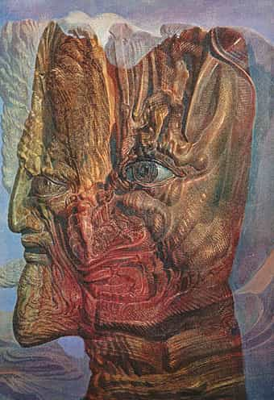

Daryush "Roosh" Valizadeh created ROK in October 2012. You can visit his blog at RooshV.com or follow him on Twitter and Facebook.


BOnce you declare an idea or person to be your enemy, you give them a room in your mind. Within that room you insert their history, strategies, tactics, strengths, and weaknesses. You dedicate more of your waking hours to understanding how to defeat them. As time passes, items from that room start to leak out into your being, until you look in the mirror and realize that you are not that different from your enemy.
At the height of my PUA days, I declared feminists as my enemy. They were degenerate, anti-family, and promiscuous. This was at the peak of when I embarked on behavior that was degenerate, anti-family, and promiscuous. My attacks against them were one way of relieving the guilt and discomfort of my own behavior, since most of the girls I slept with had to have feminist thoughts in their minds to allow me to gain easy sex. I was experiencing pleasurable orgasms with the enemy in the evening then writing about how bad they were the day after.
I went one level up. Who created feminism? Who pushes their ideas? The Jews. They were crafty, intelligent, persistent, and masters of propaganda. Their negative influence on Western civilization must be countered, I thought. I examined their tactics and mimicked some of them in my own informational outlet, Return Of Kings, which has Jew-pilled thousands of men. I started thinking how to be more effective with propaganda and create opposing narratives, until I realized that in order to counter the Jew, I had to become more like the Jew.
Recently, Trump supporters Jack Posobiec and Laura Loomer tried to shut down a New York play that attempted to normalize violence against the President.
If you mute the audio of the video, you may think Posobiec and Loomer are left-wing activists, since this is the same type of tactic that leftists have used for years. I don’t particularly mind their disruption of the play since it gives the left a taste of their own medicine, but it was inevitable that those on the right would copy the left, just like how you should now expect the left to copy the right’s use of effective memes. However righteous your movement, understand that you will think and become more like your enemy as you fight him.
Even battling against something clearly immoral like pedophilia forces you to get in the head of pedophiles. What triggers them to abuse children? What kind of abuse do they perform? How do they network with each other to carry about their abuse? You start to think like pedophiles with the intention of stopping them, until the only step remaining is to actually view child porn yourself like in the case of reporter Kurt Eichenwald, who established financial ties with a child porn producer to investigate him.

Declaring a man as your enemy is the start of an intimate relationship that stems from three possible motivations: (1) you want to be more like him by having his power or wealth, (2) you want to gain more of your own power by hurting or crushing him, or (3) you want to relieve your inner guilt from already being like him, like in my case with feminists. The enemy will be present every single day of your life as you study him, interact with him, and probe him for weaknesses that you can exploit. At the end of many years of battle with your enemy, do not be shocked when you look him deep in the eyes and see a reflection of yourself.
Defend yourself against those who wish you harm, but understand the cost in having enemies. They are merely a mirror into your own demons and inner conflicts. Find out why you hate something before you start attacking what you’ll become more like with every passing day.
This article was originally published on Roosh V.
Read Next: 5 Stages Of Decline After A Society Becomes Infected By Feminism